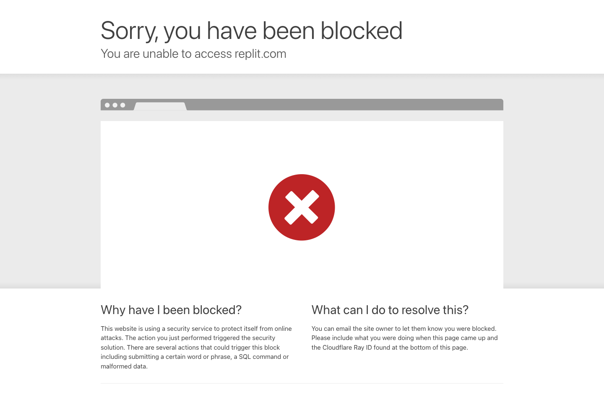

이번 주 목표
첫 결과물 완성
- 브라우저 도구로 앱 한 개 끝까지 만들기
- 프론트 화면과 API 연결 지점 구분하기
- 출력 결과를 보고 다시 수정 요청하기
Week 1
브라우저에서 바로 시작 일단 하나 끝까지 만들기 질문형 사용에서 작업지시형 사용으로 이동
이번 주 목표
수업 전 준비
예시 도시 · 서울 도쿄 싱가포르 샌프란시스코
1주차 공통 도구
1주차는 모두 같은 흐름으로 따라오기
가입 안내
GitHub 계정도 함께 준비하면 이후 연결이 쉬움

Week 1 Flow
브라우저에서 바로 시작
출장 대시보드 첫 화면 생성
입력 폼 카드 버튼 흐름 확인
더 나은 결과물로 반복
왜 Replit인가
대체 가능 도구
0-10분
10-20분
출장 / 미팅 의사결정 대시보드를 만들어줘
한 페이지 웹앱으로 만들기
도시 날짜 국가 입력 받기
날씨 공휴일 환율 카드 3개 보여주기
처음에는 실제 API 대신 목업 데이터 사용
파일 수는 최소로 유지
초보자가 읽기 쉬운 구조로 만들기Replit에서 바로 붙여넣기
20-35분
좋아
이제 아래 4가지를 고쳐줘
1. 입력 폼을 더 단순하게
2. 결과 카드 3개를 한눈에 비교 가능하게
3. 빈 값일 때 안내 문구 추가
4. 모바일에서도 읽기 쉽게한 번에 너무 많이 바꾸지 않기
35-45분
좋아
이제 목업 데이터를 더 현실적으로 바꿔줘
도시마다 날씨 공휴일 환율 예시값이 다르게 보이게 해줘
로딩 문구와 오류 문구도 함께 넣어줘45-55분
핵심 · 완벽함보다 작동 우선
55-60분
사용자가 보는 영역
외부 정보 가져오는 연결
백엔드
데이터베이스
일단 화면과 데이터 연결 감각부터
이번 주 산출물
과제
이번 주 핵심 문장
답변 받기보다 결과물 만들기 완벽하게 묻기보다 하나씩 고치기 일단 작동하는 것부터 만들기
공식 링크